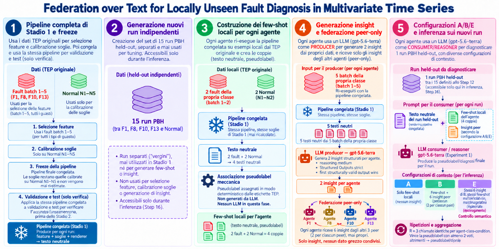
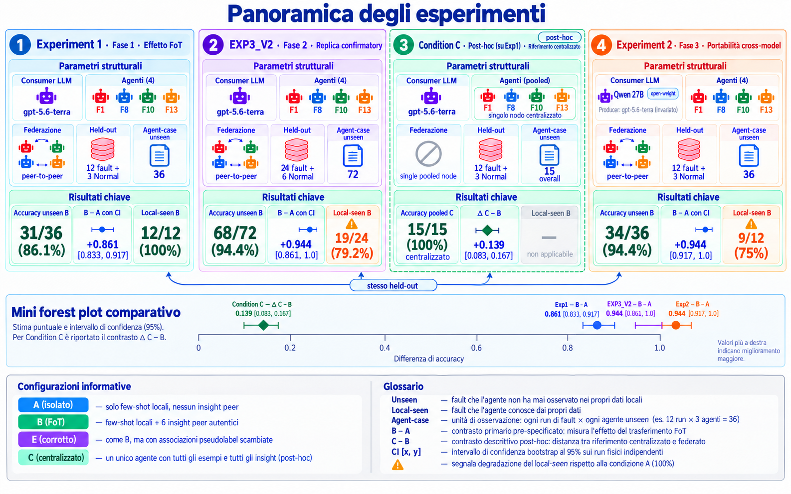

Federation over Text for Locally Unseen Fault Diagnosis in Multivariate Time Series
Questa interfaccia spiega visivamente come l'esperimento applica Federation over Text (FoT), introdotto da Yao et al., al Tennessee Eastman Process. Segui ogni step: i dati sono inventati ma coerenti con il meccanismo reale. Ci concentreremo su una feature (shift_sigma — lo spostamento di livello) e su poche variabili XMEAS chiave.
Quattro agenti distribuiti osservano serie temporali industriali. Ognuno conosce un solo tipo di guasto. Possono riconoscere un guasto che non hanno mai visto, se un altro agente glielo descrive a parole?
Modello LLM utilizzato: gpt-5.6-terra (OpenAI, via Responses API). Ogni chiamata LLM avviene esclusivamente in Stadio 2 — Stadio 1 è completamente deterministico.
Stadio 1 — Dal segnale al testo
Come si calcola una feature, come si fissa una soglia, come si produce la descrizione neutra di un caso.
Stadio 2 — Dalla federazione alla diagnosi
Come gli agenti condividono conoscenza via testo e come la diagnosi cambia con e senza insight. Include i risultati dell'esperimento iniziale (Exp 1) e della replica confermativa con campione raddoppiato (EXP3_V2).


Il dataset: sorgente, fault e split
Prima di calcolare qualsiasi feature, serve sapere da dove vengono i dati, quali fault sono stati scelti, e come vengono suddivisi per evitare il leakage.
I dati provengono dallo snapshot upstream tennessee-eastman-dataset (commit pinnato 309b944f). Si usa esclusivamente mode_1 (condizioni operative nominali). Il simulatore fornisce segnali multivariati, fault noti, run replicabili e un istante di attivazione verificato a 10 h.
1 file — mode1_normal_500h
500 h di processo senza fault. 30 001 righe (500 h × 60 + endpoint). Campionamento 1 min. 41 XMEAS per riga. Diviso in 10 blocchi da 50 h (N1 … N10).
4 classi: F1, F8, F10, F13
Per ciascuna classe, K batch (realizzazioni indipendenti). Ogni batch: 50 h, 3 001 righe, 41 XMEAS. Fault iniettato a 10 h: prime 10 h normali, ultime 40 h con firma del guasto.
Il TEP definisce 21 fault in cinque famiglie (Downs & Vogel 1993): Step (F1–F7), Random variation (F8–F12), Slow drift (solo F13), Sticking (F14–F15), Unknown (F16–F20), più F21. La selezione segue un criterio di copertura dei meccanismi:
- F1 → famiglia Step (perturbazione istantanea persistente)
- F8 → famiglia Random variation (disturbo stocastico continuo)
- F10 → secondo Random var., coppia intra-famiglia con F8 (stesso meccanismo, variabile diversa)
- F13 → unico Slow drift del TEP — inclusione obbligata; caso più difficile
Esclusi: F16–F20 (meccanismo ignoto, no ground truth interpretabile), F14–F15 (ridondanti con Step), F21 (fuori tassonomia). Tre assi di contrasto: step vs random, intra-famiglia random, drift lento vs rapido.
| Fault | Meccanismo | Sim. intra | Margine | Nota |
|---|---|---|---|---|
| F1 | Step | 0.991 | 0.077 | Stabile, ben separata |
| F10 | Random var. | 0.991 | 0.011 | Quasi sovrapposta a F1 |
| F8 | Random var. | 0.860 | 0.014 | Massima variabilità intra |
| F13 | Slow drift | 0.889 | 0.044 | Min. sim. col Normal (0.718) |
I dati vengono partizionati prima di qualsiasi calibrazione. Lo split è rigido: i dati di validation e test non influenzano mai le scelte di design.
| Split | Fault (F1, F8, F10, F13) | Normal | Ruolo |
|---|---|---|---|
| Development / calibration | batch 1 – 5 | N1 – N5 | Scelta feature, calibrazione soglie, baseline |
| Validation | batch 6 – 7 | N6 – N7 | Controllo fuori sviluppo, nessun tuning |
| Test split | batch 8 – 10 | N8 – N10 | Verifica finale, aperto solo dopo il freeze |
Cosa contengono i dati: un run di fault visto dal sensore
Il Tennessee Eastman Process produce 41 variabili misurate (XMEAS) campionate ogni minuto. Un run di fault dura 50 h: le prime 10 h sono normali, poi si attiva il guasto. Ecco cosa vede il sensore XMEAS-1 (A Feed flow) in un run di F1.
Dopo l'iniezione a 10 h, le rimanenti 40 h vengono suddivise in 8 finestre da 5 h ciascuna. Ogni finestra diventa l'unità di analisi.
10–15h
15–20h
20–25h
25–30h
30–35h
35–40h
40–45h
45–50h
Costruire il riferimento: la baseline Normal
Prima di giudicare un segnale, serve sapere cosa è "normale". La baseline viene costruita solo dai dati Normal N1–N5 (250 h di processo senza guasti) e mai modificata dopo.
μ₀ è il valore medio che XMEAS-1 assume quando il processo funziona normalmente. σ₀ misura quanto normalmente fluttua attorno a quel valore. Insieme definiscono la "zona normale": ogni deviazione viene misurata in multipli di σ₀, così che variabili con scale fisiche diverse (pressioni, temperature, portate) diventano confrontabili.
| Variabile | Descrizione | μ₀ | σ₀ |
|---|---|---|---|
XMEAS-1 | A Feed (stream 1) | 0.2668 | 0.00594 |
XMEAS-7 | Reactor Pressure | 2705.0 | 14.82 |
XMEAS-9 | Reactor Temperature | 120.4 | 0.153 |
Calcolo della feature: shift_sigma
La scelta delle feature è una decisione di design sul development/calibration. Il calcolo delle feature è invece l'operazione ripetuta su ogni finestra.
Nella procedura completa, lo stesso calcolo viene applicato a tutte le 8 finestre e a tutte le 41 variabili XMEAS, producendo 8 × 41 = 328 valori di shift_sigma per ciascun run. Qui sotto vediamo un singolo esempio concreto: XMEAS-1, finestra W1 (10–15 h), F1 batch 1.
| Variabile | x̄w | μ₀ | σ₀ | shift_sigma |
|---|---|---|---|---|
XMEAS-1 | 0.7224 | 0.2668 | 0.00594 | +76.7 σ |
XMEAS-7 | 2713.5 | 2705.0 | 14.82 | +0.57 σ |
XMEAS-9 | 120.8 | 120.4 | 0.153 | +2.61 σ |
XMEAS-1 domina completamente; XMEAS-7 quasi invariata; XMEAS-9 mostra un lieve spostamento.
Calibrazione della soglia
La soglia serve a distinguere le fluttuazioni normali dagli spostamenti significativi. Viene calcolata solo sui dati Normal N1–N5, senza mai guardare i fault. 50 finestre normali, per ognuna si prende il massimo |shift_sigma| fra le 41 XMEAS, poi si ordina: la soglia è il valore al rango 49.
| Rango | Finestra | max |shift_sigma| | Esito |
|---|---|---|---|
| 46 | N1 [20, 25) | 1.08 | sotto soglia |
| 47 | N3 [135, 140) | 1.27 | sotto soglia |
| 48 | N2 [85, 90) | 1.60 | sotto soglia |
| 49 | N4 [190, 195) | 1.970 | ← SOGLIA |
| 50 | N2 [95, 100) | 2.005 | unico > soglia |
Lo score di ogni XMEAS è espresso rispetto al comportamento Normal di quella stessa variabile: per shift_sigma, lo spostamento è misurato in deviazioni standard Normal. Gli score sono quindi adimensionali e confrontabili: non stiamo mettendo a confronto pressioni, temperature o portate nelle loro unità fisiche. Il massimo identifica, dentro quella finestra, la deviazione standardizzata più estrema tra i 41 canali e risponde alla domanda di sistema: «almeno una variabile si è allontanata dal proprio normale più del previsto?». Non identifica la causa del cambiamento; comprime la finestra in un solo score conservando il canale più distante dal suo riferimento. Calibrare la soglia sui massimi Normal incorpora nel riferimento il fatto che in ogni finestra cerchiamo l'estremo fra 41 opportunità.
Con α = 0.05, si ammette che 1 finestra su 50 (il 2%) possa superare la soglia anche nel Normal. Questo equivale a un controllo conformal: il rango 49 è il quantile al 98° percentile dei massimi-di-sistema. La regola di attivazione è strettamente maggiore: |shift_sigma| > 1.970.
| Feature | Quantifica | Soglia |
|---|---|---|
abs_shift_sigma | Spostamento di livello | 1.970 |
abs_slope_sigma_h | Pendenza (trend) | 0.747 |
residual_std_ratio | Variabilità residua | 1.368 |
diff_std_ratio | Variazioni campione-campione | 1.405 |
Dopo questo momento le soglie sono congelate. Non verranno mai più ricalcolate.
Dai numeri ai flag: applicazione soglia e generazione flag e segni
Ora applichiamo la soglia congelata (1.970) a tutte le 8 finestre post-fault del run F1 batch 1. Per la feature shift_sigma: se |shift_sigma| > 1.970, il flag è ON. Il segno (+ o −) viene conservato.
Dai flag al JSON strutturato
I flag di tutte le finestre vengono aggregati in un'evidenza strutturata: quante finestre attive, coerenza di segno, persistenza nella fase iniziale e tardiva, episodi consecutivi. Ecco l'estratto per XMEAS-1, feature level (shift).
| Campo | Significato | Valore qui |
|---|---|---|
n_active_windows | Quante finestre hanno superato la soglia | 8 su 8 |
sign_consistency | Quanto è coerente il segno (1.0 = sempre lo stesso) | 1.0 |
late_active | Lo spostamento persiste anche nelle ultime finestre? | Sì |
strict_global_persistence | Attivo in tutte le finestre, un solo segno, attivo nel tardo | Sì |
Dal JSON al testo neutrale
Il JSON viene trasformato in una descrizione in linguaggio naturale. Il testo è neutrale: descrive fatti quantitativi osservati, senza mai nominare il fault, assegnare un'etichetta diagnostica, o interpretare le cause.
Stadio 1 è completamente deterministico: nessun LLM, nessuna scelta stocastica. Dati gli stessi segnali e la stessa baseline congelata, produce sempre lo stesso testo neutrale. Questo componente — la pipeline completa da segnali grezzi a testo neutrale — è il verbalizzatore V2: un renderer a template, senza parametri appresi, con calibrazione statistica conformal. Il testo che produce è il ponte verso Stadio 2: sarà l'unico input numerico che gli agenti condivideranno.
Evaluator: il signature vector
Prima di affidare i testi a un reasoner LLM, l'evaluator verifica offline se la rappresentazione neutrale conserva una struttura sufficientemente stabile (intra-classe) e separabile (inter-classe). Non produce predizioni: valuta la qualità descrittiva della pipeline.
L'evaluator lavora sul JSON strutturato e costruisce un signature vector per ogni run: 17 componenti normalizzate per ciascuna delle 41 XMEAS, per un totale di 697 valori. La similarità tra due firme è 1 − mean(|a−b|).
L'evaluator può così chiedere: due run F1 presentano pattern temporali simili? Un run F1 è più vicino agli altri F1 che ai Normal? La separabilità descrittiva non equivale all'accuratezza diagnostica: una firma separabile non garantisce che un reasoner la utilizzi correttamente.
Le firme reali hanno 697 componenti. Qui riduciamo a 4 componenti schematiche per illustrare la meccanica.
| Firma | c₁ | c₂ | c₃ | c₄ |
|---|---|---|---|---|
| F1 · run A | 1.00 | 1.00 | 0.90 | 0.20 |
| F1 · run B | 1.00 | 0.95 | 0.85 | 0.25 |
| Normal · run C | 0.10 | 0.00 | 0.05 | 0.90 |
Differenze: |0.00|, |0.05|, |0.05|, |0.05|
Media 0.0375 → similarità 0.9625
La rappresentazione è stabile.
Differenze: |0.90|, |1.00|, |0.85|, |0.70|
Media 0.8625 → similarità 0.1375
La rappresentazione è separabile.
Gli agenti e la conoscenza locale non-IID
Quattro agenti osservano lo stesso processo ma conoscono ciascuno un solo tipo di guasto. Tutti conoscono il Normal. I nomi reali dei fault (F1, F8, F10, F13) sono nascosti dietro pseudolabel opache.
Il test split (batch 8–10) è già stato osservato in Stadio 1. Un test visto non è più vergine. Per Stadio 2 servono 15 nuovi run congelati, mai toccati prima dell'inferenza:
Questi 15 run vengono congelati (hash, manifest) prima della verbalizzazione e dell'inferenza. Ogni run va a tutti e 4 gli agenti: 1 lo vede come local-seen, 3 come local-unseen → 12 fault × 3 = 36 agent-case unseen per condizione.
F1
F8
F10
F13
L'LLM non vede mai F1/F8/F10/F13. Vede solo token opachi. Il mapping reale è noto solo all'evaluator offline.
Tutte le chiamate LLM in Stadio 2 usano gpt-5.6-terra (OpenAI) tramite la Responses API. Le operazioni coinvolte sono:
Stesso modello, stessa versione per tutti gli agenti e tutte le condizioni (A, B, E). Il modello è un parametro fisso dell'esperimento — non viene fine-tunato.
La prima cosa che fa ogni agente è preparare il proprio few-shot locale: prende i casi che conosce (i suoi batch 1–2 di fault e i Normal N1–N2), li fa passare per la pipeline Stadio 1 già congelata e ne ricava esempi pronti da mostrare al reasoner.
| Passaggio | Che cosa accade realmente |
|---|---|
| Input dei casi | Per ciascun agente: i workbook fissi batch 1–2 del proprio fault locale e i blocchi Normal N1–N2. La baseline development/calibration N1–N5 resta il riferimento frozen. |
| Operazione | L'agente riesegue la pipeline Stadio 1 congelata (finestre → feature → soglie già congelate → flag → JSON → testo neutrale) e associa a ogni caso la sua pseudolabel. Nessun LLM, nessuna ricalibrazione delle soglie. |
| Output | 4 pack × 4 esempi, ciascuno ridotto alla coppia (testo neutrale, pseudolabel). |
Generazione degli insight e federazione peer-only
Ogni agente usa l’LLM per condensare in 2 insight testuali le regolarità ricorrenti nei testi neutrali frozen di 5 casi development/calibration del proprio fault. Gli insight vengono generati prima dell’accesso diagnostico all’held-out; poi la federazione distribuisce a ogni agente i 6 insight degli altri tre peer, mai i propri.
Ogni agente riceve 6 insight dagli altri 3 peer (2 per ciascuno). Non riceve mai i propri insight.
| Agente | Riceve insight da | Non riceve da | Totale |
|---|---|---|---|
| Agent 1 | Agent 2, 3, 4 | sé stesso | 6 |
| Agent 2 | Agent 1, 3, 4 | sé stesso | 6 |
| Agent 3 | Agent 1, 2, 4 | sé stesso | 6 |
| Agent 4 | Agent 1, 2, 3 | sé stesso | 6 |
Le tre configurazioni informative: A, B, E
Per isolare l'effetto degli insight, lo stesso agente diagnostica lo stesso caso sotto tre condizioni controllate. L'unica cosa che cambia è il blocco degli insight peer.
L'agente ha solo i 4 few-shot locali. Nessuna conoscenza peer. Questo è l'information floor per i fault unseen.
L'agente riceve 6 insight peer con pseudolabel corrette. INS-001 (F1) è associato a CLS-ZOGAA.
Stessi 6 insight, stesso ordine, stessi ID. Ma le pseudolabel sono ruotate: INS-001 (F1) è associato a CLS-OJNSG (F8). Nessuna label resta corretta.
Se B funziona meglio di A, potrebbe essere perché il testo in più aiuta genericamente (effetto "più contesto"). E controlla questa ipotesi: ha esattamente lo stesso volume e formato di testo di B, ma con le associazioni sbagliate. Se B > E, il beneficio dipende dalla correttezza dell'informazione, non dalla sua quantità.
Inference: Agent 3 diagnostica un caso F1 unseen
Vediamo cosa succede quando Agent 3 (che conosce solo F10) deve diagnosticare PBH-004, un nuovo run di F1 mai visto. Agent 3 riceve lo stesso testo neutrale in tutte e tre le condizioni.
| Condizione | Insight peer | R₁ | R₂ | R₃ | Aggregato | Esito |
|---|---|---|---|---|---|---|
| A | Nessuno | null | null | null | Astensione | Incorrect |
| B | 6 genuini | CLS-ZOGAA | CLS-ZOGAA | CLS-ZOGAA | CLS-ZOGAA | Correct |
| E | 6 corrotti | CLS-OJNSG | CLS-OJNSG | CLS-OJNSG | CLS-OJNSG | Incorrect |
Risultati: il trasferimento di conoscenza funziona
12 run fisici indipendenti × 3 agenti unseen ciascuno = 36 agent-case per condizione. Tutte le predizioni congelate prima di unirle alla ground truth.
5 errori su 36, tutti concentrati su F8. F1, F10 e F13: 9/9 ciascuno.
Per verificare la robustezza, l'esperimento è stato rieseguito con il doppio dei dati: 24 run di fault (6 per classe) + 6 Normal = 30 run fisici. Stesse soglie congelate, stessa pipeline, stesso modello. Nessun parametro modificato.
24 fault × 3 agenti unseen = 72 agent-case per condizione.
In EXP3_V2 un effetto secondario diventa più visibile: sui 24 casi local-seen (dove l'agente conosce il proprio fault), la condizione B (con insight peer) degrada leggermente rispetto alla condizione A isolata.
L'aggiunta di insight eterogenei introduce rumore che può confondere l'agente su un fault che già conosceva. Il beneficio netto sui fault unseen supera ampiamente questa perdita, ma il fenomeno indica un trade-off da approfondire.
La federazione testuale funziona e si conferma a campione raddoppiato. In Exp 1 gli agenti riconoscono l'86.1% dei fault unseen; in EXP3_V2 il 94.4% (68/72). Il controllo corrotto (E) dimostra che il beneficio dipende dalla correttezza dell'associazione insight–label, non dalla semplice presenza di testo aggiuntivo.
Confronto centralizzato: Condition C
Quanto migliorerebbe la diagnosi se un singolo agente centrale avesse accesso a tutta l'esperienza testuale del sistema? Condition C risponde a questa domanda come riferimento esplorativo post-hoc.
Ogni agente ha 4 esempi locali (2 fault + 2 Normal) e riceve 6 insight peer (2 da ciascuno degli altri 3 agenti). L'agente non vede mai i propri insight e non ha accesso agli esempi altrui.
Un unico contesto LLM ha tutti gli 8 esempi etichettati (2 per classe fault + 2 Normal) e tutti gli 8 insight (2 per agente). Ha la full information prompt-facing dell'intero sistema.
Il vantaggio di C su B è concentrato interamente su CLS-OJNSG (F8): le altre 9 coppie fisiche hanno C = B. In altre parole, la federazione peer-only (B) raggiunge la performance centralizzata su 3 classi su 4.
| Condizione | Informazione | Accuracy | Nota |
|---|---|---|---|
| A | Solo locale (4 es.) | 0/36 = 0.000 | Information floor |
| E | Stessi insight, label corrotte | 3/36 = 0.083 | Controllo corrotto |
| B | Locale + 6 peer insight | 31/36 = 0.861 | FoT peer-only |
| C | Tutto pooled (10 es. + 8 insight) | 15/15 = 1.000 | Riferimento centralizzato |
Con sola federazione testuale (B), gli agenti distribuiti raggiungono l'86.1% su fault mai visti. Un riferimento centralizzato con full information (C) raggiunge il 100%, ma con un gap concentrato su una sola classe. La federazione peer-only cattura la quasi totalità del beneficio della centralizzazione, senza mai condividere dati grezzi, parametri o gradienti.
Experiment 2: portabilità cross-model con LLM open-weight
Experiment 1 usava gpt-5.6-terra sia come producer sia come consumer. Experiment 2 ha ora verificato il consumo degli stessi insight frozen con Qwen3.8-27B-FP8 sul server locale. Il risultato mitiga la dipendenza da un unico consumer proprietario, mentre il producer resta proprietario.
La chiave è la separazione tra producer (chi genera gli insight) e consumer (chi li usa per diagnosticare). In Experiment 2 si cambia solo il consumer:
Un modello con pesi pubblici è versionabile e ispezionabile. La lane frozen rende ripetibile il consumo nella configurazione esaminata; non elimina la dipendenza dal modello proprietario che ha prodotto gli insight.
Il consumer selezionato è Qwen3.8-27B-FP8, eseguito localmente tramite vLLM. Protocollo, predizioni, evaluator e risultati sono congelati in una catena di quattro tag.
2 × NVIDIA RTX 5000 Ada, circa 32 GB VRAM ciascuna
Circa 64 GB complessivi, utilizzabili con tensor parallelism
125 GiB RAM; Xeon 16 core / 32 thread con AVX-512 e AMX
808 GB liberi su NVMe; Ubuntu 24.04; driver NVIDIA funzionante e CUDA supportata
Sull'unseen: A=0/36, B=34/36, E=1/36; B−A=0.944444 e B−E=0.916667, con C1–C4 4/4 PASS e zero astensioni. H2 è un controllo secondario distinto e fallisce. Il vantaggio di B persiste per questo secondo consumer open-weight, ma non dimostra portabilità universale o generalità end-to-end.
Nel run frozen tutti i cinque errori di B raggiungevano il limite effettivo di 1023 reasoning token. Non era quindi possibile capire se H2 fallisse per interferenza degli insight o perché il modello veniva interrotto troppo presto. La sensitivity appaiata ripete le 60 osservazioni B uniche aumentando soltanto il budget; usa R=1 perché le triplette originali erano byte-identiche, quindi non pretende di misurare variabilità stocastica.
| Budget | Accuracy B | Local-seen | Unseen | Capped | Regressioni |
|---|---|---|---|---|---|
| 1024 | 91,67% | 75,00% | 94,44% | 24/60 | 0 |
| 1536 | 93,33% | 75,00% | 97,22% | 15/60 | 0 |
| 2048 | 95,00% | 83,33% | 97,22% | 10/60 | 0 |
| 3072 | 95,00% | 83,33% | 97,22% | 5/60 | 0 |
L'accuracy sale da 55/60 a 57/60 e i capped scendono dal 40,0% all'8,3%, senza nuovi errori, ma il beneficio si arresta dopo 2048. Un follow-up post-hoc porta a 4096 i cinque casi ancora capped: 2/5 terminano sotto il limite e 3/5 restano capped ma corretti. Dei due errori presenti a 3072, agent_3/PBH-009 viene corretto pur restando capped; agent_4/PBH-014 rimane errato sotto il limite.
gpt-5.6-terra delimitano la conclusione.
Ablation: confronto sistematico delle rappresentazioni TS→Testo
Il verbalizzatore V2 è una scelta di design. Un reviewer può chiedere: «perché non dare i numeri grezzi all’LLM, o usare statistiche, o una codifica simbolica?» Questa ablation risponde con un confronto head-to-head controllato su 15 casi TEP indipendenti, stesso LLM, stesse condizioni — cambia solo la rappresentazione.
Classificazione centralizzata a 5 classi (F1, F8, F10, F13, Normal) su 15 casi held-out indipendenti (PBH-001…PBH-015), 3 ripetizioni per caso, GPT-5.6-terra con output strutturato. 180 inferenze totali (4 bracci × 45).
| Braccio | Accuracy | 95% CI | Macro-F1 | Sel. Acc | Token/prompt |
|---|---|---|---|---|---|
| V2_TEXT | 88.9% | [73.3, 100] | 0.907 | 0.930 | ~550 |
| RAW_FEATURES | 93.3% | [80.0, 100] | 0.960 | 1.000 | ~21k |
| CGTIME_STATS | 91.1% | [75.6, 100] | 0.943 | 1.000 | ~99k |
| SAX_SYMBOLIC | 73.3% | [53.3, 93.3] | 0.721 | 0.786 | ~21k |
Nessun confronto è statisticamente significativo con i test cluster-aware (permutation test esatto, bootstrap clusterizzato, McNemar a livello di caso) dopo correzione Holm–Bonferroni. Con N=15 unità indipendenti, il minimo effetto rilevabile (MDE) è ≈25 punti percentuali.
| Confronto | Δ Acc | p (boot) | p (perm) | p (McN) | Sign.? |
|---|---|---|---|---|---|
| V2 vs RAW | −0.044 | 0.769 | 1.000 | 1.000 | No |
| V2 vs CGTIME | −0.022 | 0.967 | 1.000 | 1.000 | No |
| V2 vs SAX | +0.156 | 0.270 | 0.375 | 0.625 | No |
| RAW vs CGTIME | +0.022 | 0.710 | 1.000 | 1.000 | No |
| RAW vs SAX | +0.200 | 0.072 | 0.250 | 0.250 | No |
| CGTIME vs SAX | +0.178 | 0.071 | 0.250 | 0.250 | No |
Il guasto F13 (drift lento) mostra recall basso in tutti i bracci (0.333–0.778), ma con pattern diversi per braccio:
RAW_FEATURES e CGTIME_STATS raggiungono selective accuracy = 1.000 (quando rispondono, non sbagliano mai), ma con copertura inferiore. Il pattern è arm-dependent, non universale.
| Braccio | F1 | F8 | F10 | F13 | Normal |
|---|---|---|---|---|---|
| V2_TEXT | 1.000 | 0.667 | 1.000 | 0.778 | 1.000 |
| RAW_FEATURES | 1.000 | 1.000 | 1.000 | 0.667 | 1.000 |
| CGTIME_STATS | 1.000 | 1.000 | 1.000 | 0.556 | 1.000 |
| SAX_SYMBOLIC | 1.000 | 1.000 | 1.000 | 0.333 | 0.333 |
- Campione piccolo: 15 casi indipendenti (3 per classe). Il minimum detectable effect (MDE) con questo campione è ~25 punti percentuali — differenze inferiori non sono rilevabili. È un pilot study esplorativo, non un trial confermativo.
- Confound informazione–rappresentazione: V2_TEXT include conoscenza di dominio (soglie, trend); gli altri bracci no. L’esperimento testa formato + informazione insieme.
- 4 guasti su 28: coperti F1 (step), F8 (stocastico), F10 (step), F13 (drift). Non generalizzabile a tutti i fault TEP.
- Un solo LLM: GPT-5.6-terra. Un altro modello potrebbe cambiare il ranking.
- Costo preprocessing V2: il risparmio di token è reale, ma il preprocessing conformal ha un costo computazionale esterno al budget del prompt.
Quanto comunicano davvero gli agenti?
FoT non scambia pesi di una rete neurale: spedisce brevi insight testuali. Abbiamo misurato questi messaggi direttamente dagli artefatti frozen, senza eseguire nuove chiamate LLM e senza cambiare i risultati esistenti.
L’esperimento mostrava che gli insight aiutavano gli agenti a diagnosticare i guasti. Mancava però una risposta a una domanda molto semplice:
Per rispondere bisogna contare messaggi, byte, token e trasferimenti. Un token è, in modo semplificato, un piccolo pezzo di testo letto dal modello. Senza questi numeri non possiamo dire che FoT sia leggero, economico o più efficiente di altri sistemi.
La nuova analisi misura il costo osservato della comunicazione. Non dimostra automaticamente che FoT sia più efficiente o più privato.
Ogni agente produce due piccoli riassunti di ciò che ha imparato sul proprio guasto. In totale esistono 8 insight. Quando un agente deve diagnosticare un caso, riceve i 6 insight prodotti dagli altri tre agenti.
2 insight ciascuno
riceve 6 insight peer
Se mandiamo il messaggio appropriato a tutti e quattro gli agenti, trasferiamo complessivamente 9.438 byte, cioè circa 9,4 KB. Lo stesso testo occupa un numero diverso di token a seconda del modello che lo legge.
I token sono incrementi esatti osservati nei prompt completi B rispetto ad A. Non sono una stima ottenuta contando il testo da solo. Ogni singolo consumer riceve fra 2.304 e 2.420 byte.
B contiene gli insight con le etichette corrette. E contiene gli stessi insight nello stesso ordine, ma collega ogni descrizione all’etichetta sbagliata. In questo modo controlliamo se aiuta davvero il significato del messaggio, e non soltanto la presenza di testo aggiuntivo.
| Controllo | Risultato |
|---|---|
| Numero, struttura e ordine degli insight | Uguali |
| Byte e token totali | Uguali |
| Significato delle pseudolabel | Derangiato in E |
| File byte-identici? | No: 24 etichette sostituite, 112 posizioni byte diverse |
Gli 8 insight sono stati prodotti una sola volta e poi riutilizzati in tutti gli esperimenti. La produzione frozen ha richiesto:
chiamate
input token
output token
latenza registrata
I log riportano 0 reasoning token per queste quattro chiamate. Non calcoliamo un costo in euro o dollari perché negli artefatti non sono congelati prezzi o addebiti applicabili.
Il blocco di insight viene reinserito in ogni chiamata al consumer. Per questo il volume totale cresce con il numero di casi e con le tre ripetizioni LLM.
| Esperimento | Prompt B | Byte | Token | Unseen corrette |
|---|---|---|---|---|
| Experiment 1 | 180 | 424.710 | 122.355 GPT | 31/36 |
| EXP3_V2 | 360 | 849.420 | 244.710 GPT | 68/72 |
| Experiment 2 | 180 | 424.710 | 133.830 Qwen | 34/36 |
Nel prompt completo, gli insight rappresentano circa il 30% dei token. Sulle sole predizioni unseen corrette, il costo osservato è circa 2.159–2.368 token di payload per risultato corretto; è una normalizzazione descrittiva, non una prova che FoT sia più efficiente di altri paradigmi.
- Un round logico: B usa una libreria statica, distribuita una volta in senso concettuale; operativamente il testo è copiato in ogni prompt.
- GPT e Qwen contano diversamente: la stessa stringa può produrre numeri di token diversi.
- La condizione C non è equivalente: usa 10 esempi pooled e tutti gli 8 insight, quindi il suo contesto è molto più ricco e non direttamente confrontabile con B.
- Nessun claim automatico: questi conteggi non dimostrano privacy, efficienza di banda o superiorità rispetto a FedMD, FedProto o LoRA.
python analysis/communication_characterization/characterize_payload.py.
Baseline numerica con prototipi condivisi
Per verificare se FoT offre un vantaggio rispetto a una condivisione numerica, abbiamo eseguito una baseline numerica con prototipi condivisi, ispirata a FedProto sugli stessi quattro agenti e sugli stessi 15 casi PBH. Non è FedProto originale: non addestra embedding o reti.
Ogni run è rappresentato dal vettore frozen a 697 componenti derivato dall’evidenza strutturata prima del testo. Ogni agente calcola sui soli batch development 1–5 il prototipo del proprio fault; Normal usa N1–N5. I tre prototipi fault dei peer vengono poi condivisi.
Distanza L1 media, nessuna normalizzazione appresa dal test, pseudolabel opache, tie entro 1e-12 → astensione. La verità PBH entra soltanto dopo la scrittura delle predizioni.
| Metodo | Complessiva | Local-seen | Local-unseen | Normal |
|---|---|---|---|---|
| Prototipi condivisi | 60/60 | 12/12 | 36/36 (100%) | 12/12 |
| Local-only numerica | 24/60 | 12/12 | 0/36 | 12/12 |
| Centralizzata a centroidi | 60/60 | 12/12 | 36/36 | 12/12 |
| FoT B | 55/60 | 12/12 | 31/36 (86,1%) | 12/12 |
Bootstrap 95% della baseline: [100%, 100%], su 12 casi fisici stratificati per fault; le viste dei tre agenti unseen restano unite. La matrice è tutta diagonale: 12/12 per ciascun fault e 12/12 Normal, zero astensioni.
La baseline numerica supera FoT B di 13,9 punti local-unseen. Quindi FoT non è superiore sul piano dell’accuratezza in questo benchmark. Il risultato FoT resta evidenza di trasferimento testuale e auditabilità semantica, non di vantaggio diagnostico rispetto al numerico.
| Modello | Held-out fisico | Fault |
|---|---|---|
| AdaBoost | 15/15 | 12/12 |
| Random Forest | 15/15 | 12/12 |
| MLP | 15/15 | 12/12 |
| Lineare elastic-net | 15/15 | 12/12 |
| k-NN | 15/15 | 12/12 |
| LSTM causale + attention | 15/15 | 12/12 |
| BiLSTM + attention | 14/15 | 11/12 |
| BiLSTM multimodale + attention | 14/15 | 11/12 |
Tutti vedono le cinque pseudoclassi nel development: sono benchmark centralizzati, non metodi federati. La multimodale fonde sequenza numerica e testo neutro TF-IDF. XGBoost non era disponibile ed è stato sostituito dall'alternativa richiesta AdaBoost.
Ogni agente riceve 3 prototipi = 2.091 scalari = 16.755 byte. I quattro payload reali totalizzano 67.020 byte, incluse le pseudolabel e senza framing di rete.
PCA+SVM centralizzata e FedAvg non sono riportati: con tutte le classi al training cambierebbero il task, mentre la semplice media di modelli locali non crea un output per pseudoclassi mai viste localmente. Il riferimento centralizzato coincide con il condiviso perché usa gli stessi cinque centroidi; è descrittivo.
Condizione A+ (local-only self-insight)
La condizione A+ verifica se il semplice possesso dei propri insight (già noti all'agente) possa migliorare la diagnosi sulle classi non viste, rispondendo alla critica C01.
gpt-5.6-terra, reasoning medium, R=3, majority-vote 2/3.| Condizione | Corrette / n | Accuratezza | Astensioni |
|---|---|---|---|
| A | 0 / 36 | 0,00% | 14 |
| A+ | 0 / 36 | 0,00% | 21 |
| B | 31 / 36 | 86,11% | 0 |
| E | 3 / 36 | 8,33% | 0 |
| Confronto | Aiutati | Danneggiati | Invariati |
|---|---|---|---|
| A+ vs A | 0 | 0 | 36 (0/36) |
| B vs A+ | 31 | 0 | 5 (0/5) |
Bootstrap stratificato: Δ A+−A 95% CI [0, 0]; Δ B−A+ 95% CI [0,833 ; 0,917]; Δ E−A+ 95% CI [0,028 ; 0,139]. 10.000 draw, seed 20260829.
Critiche e stato attuale
L'esperimento mostra che un testo corretto porta a un agente conoscenza che gli manca. Ma B riceve questa conoscenza per costruzione, mentre A non conosce le classi remote. Il risultato prova il meccanismo; non prova ancora superiorità, privacy, scalabilità o uso reale.
La regola «prima l'evidenza locale, poi gli insight peer» è stata provata su tutti i 120 agent-case di EXP3_V2. Rispetto a B originale, l'accuratezza totale sale da 111/120 a 115/120.
19/24 → 23/24
68/72 → 68/72
24/24 → 24/24
Bilancio: 5 casi migliorano, 1 peggiora, zero errori di parsing. La correzione mitiga nettamente il problema, ma non garantisce che il trasferimento negativo sia impossibile. Il test è post-hoc sullo stesso campione; serve una replica indipendente per una conclusione generale. Rapporto C06.
| ID | Categoria | Critica | Stato | Perché conta |
|---|---|---|---|---|
| C01 | Valutazione | Baseline A troppo debole | Risolta | A+ (self-insight only) conferma che lo 0% di A non dipende dall'assenza di insight propri: A+ = 0% sulle classi non viste, identico ad A. Il vantaggio di B è interamente peer-driven. Vedi sezione “Condizione A+”. |
| C02a | Baseline interne | Confronti interni incompleti | Mitigata | A/B/E, A+ (local-only self-insight), Condition C e l'ablation confrontano varianti del sistema. A+ colma la lacuna del confronto local-only con gli insight propri. |
| C02b | Baseline esterne | Mancano baseline numeriche e FL | Mitigata | I prototipi condivisi ottengono 36/36 local-unseen contro 31/36 di FoT B; gli otto modelli richiesti dal supervisor ottengono 93,3–100% come riferimenti centralizzati. Manca ancora una suite FL originale sullo stesso task. |
| C03 | Rappresentazione | Trasformazione TS→testo | Mitigata | L'ablation confronta quattro formati e V2 usa meno token. Il campione è piccolo e cambia anche l'informazione preparata. |
| C04 | Modelli | Dipendenza da un solo LLM | Mitigata | Qwen conferma il risultato lato consumer. Gli insight vengono ancora prodotti da un solo modello proprietario. |
| C05 | Comunicazione | Payload non caratterizzato | Risolta | Messaggi, byte e token sono misurati. Senza confronto diretto non si può dire che FoT sia più efficiente. |
| C06 | Affidabilità | Peggioramento sui guasti noti | Risolta nel perimetro EXP3_V2 | Il full test local-first supera i quattro gate: 23/24 local-seen, 68/72 local-unseen, 24/24 Normal e zero parse failure. Bilancio: 5 miglioramenti e 1 regressione. |
| C07 | Inferenza | Reasoning cap e repliche identiche | Risolta | La sensitivity appaiata 1024–3072 e il follow-up capped a 4096 separano gli errori compatibili con troncatura da quelli per cui l'interferenza è più plausibile. Nessuna regressione; R=1 resta un test deterministico, non una misura di variabilità stocastica. |
| C08 | Scala | Pochi guasti, agenti e simulatori | Mitigata | La replica aggiunge run, ma restano quattro guasti su 28, quattro agenti e un simulatore. |
| C09 | Federazione | Federazione solo logica | Aperta | I nodi sono simulati sullo stesso processo. Non ci sono siti reali, proprietari diversi o nodi offline. |
| C10 | Sistema | Un solo round statico | Aperta | Gli insight vengono creati una volta. Non sono testati aggiornamenti, drift, ritardi o molti agenti. |
| C11 | Privacy | Nessuna garanzia formale | Aperta | Non si inviano dati grezzi, ma il testo può rivelare dati. Mancano attacchi e misure di privacy. |
| C12 | Open world | Etichette chiuse | Aperta | Il modello sceglie tra etichette note. Non è testato un guasto davvero nuovo o fuori catalogo. |
| C13 | Centralizzazione | Condition C non equivalente | Mitigata | C usa più contesto, è post-hoc ed esiste solo per Experiment 1. È un riferimento, non una prova causale. |
| C14 | Statistica | Evidenza ancora piccola | Mitigata | Replica e test per run sono corretti, ma i run indipendenti restano pochi per conclusioni ampie. |
| C15 | Novità | FoT è preesistente | Risolta editorialmente | FoT è attribuito a Yao et al.; il contributo è circoscritto alla combinazione tra TS industriali multivariate, esperienza class-disjoint/local-unseen, verbalizzazione verificabile, controllo B/E, protocollo frozen e replica. |
| C16 | Verbalizzatore | Feature e soglie rigide | Aperta | Mancano feature frequenziali e adattamento al drift. Le soglie TEP possono non funzionare altrove. |
| C17 | Applicazione | Nessuna validazione PV | Aperta | Il fotovoltaico motiva il lavoro, ma gli esperimenti usano solo TEP. |
| C18 | Conferenza | Debole evidenza Big Data | Risolta editorialmente | L'aderenza è limitata a dati distribuiti, non-IID class-disjoint, collaborazione, Variety, Veracity, Value, evaluation/benchmarking e contesto industriale/IoT. Non c'è evidenza su Volume, Velocity, edge o scalabilità. |
IEEE BigData 2026 · Special Session on Federated Learning on Big Data
Valutazione del solo fit con la call. I limiti editoriali sono sintetizzati in C15 e C18 nella sezione Critiche.
La call ufficiale include dati distribuiti, distribuzioni non-IID, collaborative learning, evaluation e benchmarking, 5V e applicazioni IoT. Il lavoro vi aderisce per aspetti realmente valutati:
- Dati distribuiti e non-IID class-disjoint: i quattro agenti hanno esperienze locali diverse.
- Collaborative knowledge transfer: gli agenti condividono insight testuali, non aggiornamenti di modello.
- Variety: il testbed contiene serie industriali multivariate e firme di guasto eterogenee.
- Veracity: ground truth, verbalizzazione deterministica, artefatti frozen e controllo B/E rendono verificabili dati e associazioni semantiche.
- Value: si valuta se la conoscenza peer consenta la diagnosi di guasti localmente non osservati.
- Evaluation e benchmarking: protocollo A/B/E, replica su nuovi run, sensitivity analysis del reasoning cap e confronti controllati forniscono una valutazione riproducibile.
- Contesto industriale e IoT: TEP è un banco di prova industriale simulato pertinente al tema IoT della call.
Valutazione editoriale basata sui materiali del progetto e sulla call consultata il 10 settembre 2026.
Literature review
Mappa dei lavori rilevanti per oggetto federato, classi localmente non viste, trasformazione TS→testo e diagnosi mediante LLM.
docs/lit_review, il workbook FoT_literature_review.xlsx e i paper convertiti in papers. Il README del convertitore PDF è documentazione tecnica e non è incluso come paper.Introduzione: paper, query e categorie
| Titolo | Query | Categoria |
|---|
To do
Query consigliate per ampliare la bibliografia e chiudere i gap:
("federated knowledge transfer" OR "collaborative agents") AND ("natural language" OR "textual memory") AND "time series"
("class-disjoint" OR "label-exclusive" OR "locally unseen classes") AND federated AND (diagnosis OR classification)
("federated fault diagnosis" OR "distributed fault diagnosis") AND ("Tennessee Eastman" OR process industry) AND non-IID
("semantic specificity" OR "label permutation" OR derangement) AND ("in-context learning" OR knowledge transfer)
("time series to text" OR verbalization) AND (faithfulness OR factuality OR hallucination) AND benchmark
("deterministic verbalization" OR "structured program") AND multivariate AND "time series" AND LLM
(SAX OR symbolic OR quantization) AND LLM AND "fault diagnosis" AND multivariate
("negative transfer" OR interference) AND federated AND (prompt OR insight OR in-context)
("communication cost" OR payload OR token) AND (federated LLM OR federated reasoning)
("selective prediction" OR abstention OR calibration) AND LLM AND industrial diagnosis
("frozen LLM" OR "training-free") AND "time series" AND (diagnosis OR classification) AND cross-model
("causal evaluation" OR placebo OR negative control) AND "knowledge sharing" AND multi-agent LLM
Sintesi costruita esclusivamente dai materiali locali richiesti. Titoli, venue e DOI marcati come non pienamente verificati nelle fonti vanno ricontrollati sul full text prima della bibliografia finale.